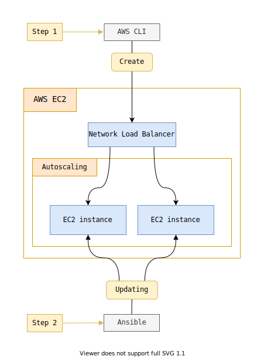
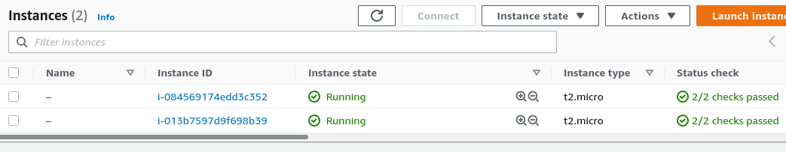
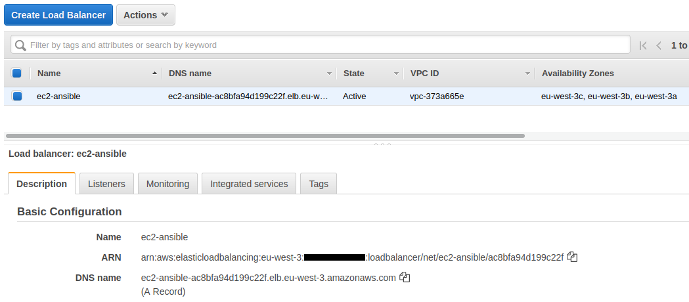
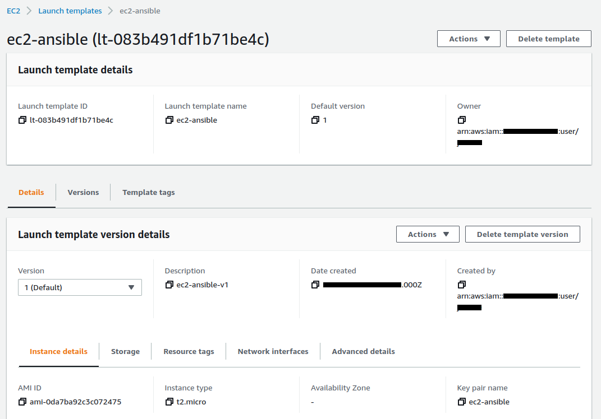
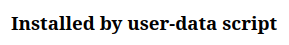
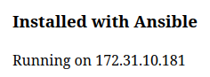

EC2 + Ansible + AWS CLI
- Create a Load balancer and EC2 instances via Autoscaling
- EC2 machines host an Apache site installed via a user-data script
- Do everything using AWS CLI
- Ping the machines with Ansible
- Update the Apache site with Ansible via a playbook
- Machine inventory will be dynamic : a bash script using AWS CLI

Install and setup the project
Get the code from this github repository :
# download the code
$ git clone \
--depth 1 \
https://github.com/jeromedecoster/ec2-ansible.git \
/tmp/aws
# cd
$ cd /tmp/aws
To setup the project, run the following command :
# create load balancer + instances using autoscaling
$ make ec2-create
This command will :
- Create an EC2 Key pair.
- Create a Security group.
- Add Ingress for port 22, 80 and 443.
- Create an IAM Role for EC2.
- Attach EC2FullAccess policy.
- Create an IAM instance profile
- Attach IAM Role to the instance profile.
- Create a Load balancer with a Target group.
- Create a Launch template.
- Create an Auto Scaling Group with 2 instances.
Now we have 2 instances :

A Load balancer :

A Launch template :

A very simple website :

You can get the Load Balancer URL with :
# get load balancer dns
$ make load-balancer-dns
Ping the EC2 machines using Ansible
To ping the machin we use :
# ping ec2 instances with ansible
$ make ansible-ping
This command execute a simple command :
$ ansible aws -m ping
But this command is executed in a specific playbook context
The ansible.cfg file execute a bash inventory file
[defaults]
inventory = ./inventory.sh
remote_user = ec2-user
private_key_file = ../ec2-ansible.pem
The inventory.sh file is an executable file :
- Some aws cli commands collect the instances ids and public address IP
- A bash script build and output some specific JSON data
#!/bin/bash
ID=$(aws autoscaling describe-auto-scaling-instances \
--query "AutoScalingInstances[?AutoScalingGroupName=='ec2-ansible'].InstanceId" \
--output text)
IP=$(aws ec2 describe-instances \
--instance-ids $ID \
--query "Reservations[].Instances[?State.Name=='running'].[InstanceId, PublicIpAddress]" \
--output text)
# ...
while read h; do
id=$(echo "$h" | cut -f 1)
ip=$(echo "$h" | cut -f 2)
TMP=$(echo '"'$id'": { "ansible_host": "'$ip'" },')
HOSTSVARS=${HOSTSVARS}${TMP}
TMP=$(echo '"'$id'",')
HOSTS=${HOSTS}${TMP}
done < <(echo "$IP")
cat << EOF
{
"_meta": {
"hostvars": {
${HOSTSVARS}
}
},
"aws": {
"hosts": [
${HOSTS}
]
}
}
EOF
If we run this script directly in the terminal we get a JSON :
$ ./playbooks/inventory.sh
{
"_meta": {
"hostvars": {
"i-084569174edd3c352": { "ansible_host": "15.237.149.180" },"i-013b7597d9f698b39": { "ansible_host": "15.236.95.164" },
}
},
"aws": {
"hosts": [
"i-084569174edd3c352","i-013b7597d9f698b39",
]
}
}
By executing our command we must answer yes to the SSH question several times :
$ make ansible-ping
EXECUTE ansible-ping
The authenticity of host '15.237.149.180 (15.237.149.180)' can't be established.
ECDSA key fingerprint is SHA256:3Xni...
The authenticity of host '15.236.95.164 (15.236.95.164)' can't be established.
ECDSA key fingerprint is SHA256:Yxvv...
Are you sure you want to continue connecting (yes/no/[fingerprint])? yes # <-- answer yes
i-084569174edd3c352 | SUCCESS => {
"ansible_facts": {
"discovered_interpreter_python": "/usr/bin/python"
},
"changed": false,
"ping": "pong"
}
yes # <-- answer yes
i-013b7597d9f698b39 | SUCCESS => {
"ansible_facts": {
"discovered_interpreter_python": "/usr/bin/python"
},
"changed": false,
"ping": "pong"
}
It’s rather unpleasant because it interrupts the flow of the script.
Update our site with Ansible
We will update all our EC2 machines with Ansible
Our playbook is very simple :
- We are replacing the home page with a new template
- We restart the Apache service
---
- name: Configure webservers
hosts: aws
become: True
tasks:
- name: copy index.html
template: src=templates/index.html.j2 dest=/var/www/html/index.html mode=0644
- name: restart httpd
service: name=httpd state=restarted
The template is very simple :
<h3>Installed with Ansible</h3>
<p>Running on {{ hostvars[inventory_hostname].ansible_facts.default_ipv4.address }}</p>
Ansible facts are a lot of data related to your remote systems, including operating systems, IP addresses, attached filesystems, and more.
We update our ec2 instances with this simple command :
# update website on ec2 instances with ansible
$ make ansible-update
PLAY [Configure webservers] ********************************************************************************************************************************************
TASK [Gathering Facts] *************************************************************************************************************************************************
ok: [i-084569174edd3c352]
ok: [i-013b7597d9f698b39]
TASK [copy index.html] *************************************************************************************************************************************************
changed: [i-084569174edd3c352]
changed: [i-013b7597d9f698b39]
TASK [restart httpd] ***************************************************************************************************************************************************
changed: [i-084569174edd3c352]
changed: [i-013b7597d9f698b39]
PLAY RECAP *************************************************************************************************************************************************************
i-013b7597d9f698b39 : ok=3 changed=2 unreachable=0 failed=0 skipped=0 rescued=0 ignored=0
i-084569174edd3c352 : ok=3 changed=2 unreachable=0 failed=0 skipped=0 rescued=0 ignored=0
By updating our browser we see that the update has been made :

The demonstration is over. We can delete our resources with this command :
# destroy all resources
$ make destroy
Warning : deleting resources can take a long time and sometimes fail along the way.
It is important to verify via the AWS website that the resources have indeed disappeared.
In this case, you have to delete them manually, which is not necessarily very easy.